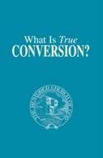
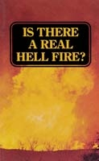
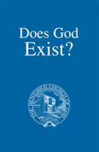
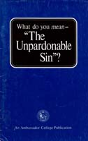

|
|
America and Britain in Prophecy |
|
Contents |
Contents |
|
Introduction
IX CHAPTER
I – CHAPTER
II – CHAPTER
III – CHAPTER
IV – CHAPTER
V – CHAPTER
VI – CHAPTER
VII – CHAPTER
VIII – CHAPTER
IX– CHAPTER
X – CHAPTER
XI – CHAPTER
XII – CHAPTER
XIII – CHAPTER
XIV – |
Introduction 7 CHAPTER ONE – CHAPTER TWO – CHAPTER THREE – CHAPTER FOUR – CHAPTER FIVE – CHAPTER SIX – CHAPTER SEVEN – CHAPTER EIGHT – CHAPTER NINE – CHAPTER TEN – CHAPTER ELEVEN – CHAPTER TWELVE – CHAPTER THIRTEEN – |
|
Author: Herbert W. Armstrong Publisher: Ambassador College Press Published: 1972 Pages: 27 |
What do you mean WATER BAPTISM? Author: David C. Pack Publisher: The Restored Church of God Published: 2008 Pages: 20 |
|
Contents |
Contents |
|
“What Shall We Do?” Jesus’ Example! Meaning of “In the Name of Jesus Christ” Jesus Commanded Baptism In Name of Jesus Only New Testament Ordinance Baptism Definitely Commanded Immersion, Sprinkling, or Pouring? The Meaning of Baptism Not Baptized Into A Denomination The Thief on the Cross How Long Should We Wait? Baptism Should Never Be Delayed Should Children Be Baptized? Must Baptism Be Administered Only by Ordained
Ministers? Who Should Baptize? Paul Baptized Few Baptizing Counsel |
Under
the Death Penalty “Repent
and Believe” Was
Jesus Baptized? Baptizing
by Christ’s Authority—in His Name Baptism
Plainly Commanded Christ’s
Great Commission Included Baptism What is
the Right Mode of Baptism? What
Does Baptism Picture? Not
Joining a Church or Denomination Don’t
Ever Delay Baptism When is
a Person Ready for Baptism? Other
Questions Counseling
for Baptism |
|
The Incredible Human Potential Author: Herbert W. Armstrong Publisher: Everest House Published: 1978 Pages: 205 |
Author: David C. Pack Publisher: The Restored Church of God Published: 2008 Pages: 202 |
|
Contents |
Contents |
|
I Christ’s Gospel was Suppressed – not Heard from the
First Century Until Now! – 1 II The Startling Revelation of What Was Christ’s Gospel –
9 III The Incredible Human Potential at Last Revealed – 21 IV Preexistence Before the Material Universe – 35 V What Led to the Creation of Man? – 53 VI How God Planed to Reproduce Himself! – 61 VII Bridging the Gap Between Human Man and the Ultimate
Spirit-composed Sons of God – 69 VIII Why Today’s World Evils? – 91 IX Why the Church? – 103 X Just What Do You Mean…Conversion? – 127 XI Human Nature-and How a Whole World Is Deceived About
its Origin – 145 XII Is There Life After Death? – 165 XIII World Peace-How it Will Come – 185 |
Introduction
– 7 CHAPTER
ONE – How
Religion Held Back Christ’s Message for 2,000 Years! – 9 CHAPTER
TWO – The True
Gospel—and Your Awesome Potential Revealed! – 19 CHAPTER
THREE – Prehistory
and Man’s Creation – 44 CHAPTER
FOUR – God’s
Plan for Expanding His Divine Family –
59 CHAPTER
FIVE – The
Unseen Component Connecting Men to
Spirit Sonship – 73 CHAPTER
SIX – Why
Humanity Could Never Solve Its
Problems – 91 CHAPTER
SEVEN – Where
and Why God’s True Church – 104 CHAPTER
EIGHT – What Is True Conversion? – 128 CHAPTER
NINE – The Origin of Human Nature – 147 CHAPTER
TEN – What Happens After Death? – 166 CHAPTER
ELEVEN – How
World Peace, Happiness and Prosperity Will Come – 181 |
|
Who or What is the PROPHETIC BEAST? Author: Herbert W. Armstrong Publisher: Ambassador College Press Published: 1985 Pages: 46 |
Who or What is the BEAST of Revelation? Author: David C. Pack Publisher: The Restored Church of God Published: 2009 Pages: 51 |
|
Contents |
Contents |
|
Who Shall Suffer the PLAGUES? The Bible Description of the BEAST The Bible Interprets Its Own Symbols Identification of the Kingdoms The Fourth Beast The Symbolism of the Horns The Deadly Wound The Deadly Wound HEALED The “HEADS” the Woman Rode The NUMBER of the “BEAST” … 666 Note These Points The Beast Is Not the Woman The Founder of Rome And Mussolini, Too The “Two-horned Beast” The Bible Interpretation Did a Church Government Rule Rome? All Nations Deceived At Armageddon The IMAGE of the Beast |
Christ's
Grave Warning Stark
Reality What Are
the Plagues? Revelation
13 and Two Beasts How
Bible Symbols Are Understood Beginning
to Understand Christ
and Saints Replace Fourth Beast What Are
the Four Kingdoms? The Four
Metals Explained The
Fourth Beast Explained What is
the “Deadly Wound”? The
Wound Healed The
Little Horn and the Saints The
Revelation 13 “Two-horned Beast” The
Bible Explains It The
Revelation 17 Beast and Woman Riding It Important
Clarification Identifying
the Beast’s Number—666 Counting
Names Mass
Worldwide Deception The
Beast’s Image Revealed The Mark
of the Beast God Must
Explain the Mark The
Beast’s Mark Martyrdoms—Past
and Future! Elect
Must Remain Fervent, Vigilant Satan’s
Wrath on Modern Israelite Descendants The
Mark—Past and Future! True
Christians “Marked” by Obedience Disobedience
is the Mark Those
Who Receive Plagues Made Plain! What
Would Satan Choose? What is
God’s Sign? Israel
and Judah Failed the Test Where
Did “Sunday Keeping” Come From? What You
Obey How the
Mark Is Made Not Yet
Enforced Responsibility
Is Personal The
Greatest Questions |
|
The Bible - Superstition or Authority...and can you
prove it? Author: Herbert W. Armstrong Publisher: Ambassador College Press Published: 1985 Pages: 33 |
BIBLE AUTHORITY …can it be proven? Author: David C. Pack Publisher: The Restored Church of God Published: 2008 Pages: 25 |
|
Contents |
Contents |
|
I Faced This Same Question It Dares to Foretell the Future! How Could You Prove It? TAUNTING the Skeptics Prophecy is a PROOF of God Prophecy Concerning Judah How Prophecy Was Fulfilled Revealed to Daniel For US, Today! What IS a Kingdom? Yes, in OUR TIME! Longest, Most Detailed Prophecy in the Bible The “King of the North” and “King of the South” Fulfilled to the Letter! The Holy Land Changes Hands Read It in Your Own Bible! Antiochus Epiphanes The Abomination of Desolation The Prophecy Comes to Christ and the Apostles Prophecy Skips to Present Ethiopia, the King of the South A Present Day Proof |
The
First Proof—Evolution Disproved? The
Cause and Effect Principle The
Gospel Goes Around the World The
Proof of Prophecy God’s
Own Challenge to Disbelievers Prophetic
Role of the Middle East Daniel’s
Amazing Prophecy Two
Prophesied Great Kings Amazing
Fulfillment of Verse Six Control
of the Holy Land Shifts Repeatedly The Role
of Antiochus IV (Epiphanes) The
Abomination of Desolation Christ
and the Apostles Enter the Prophecy The Time
of the End The King
of the South is Ethiopia Final
Coming Revival of The Roman Empire One
Final, Unusual Prophecy A Final
Quote |
|
Author: Herbert W. Armstrong Publisher: Ambassador College Press Published: 1976 Pages: 54 (28 writing, the rest
photos) |
The Black Horse - "THERE SHALL BE
FAMINES..." Author: David C. Pack Publisher: The Restored Church of God Published: 2010 Pages: 23 |
|
Contents |
Contents |
|
Chapter One Living in the Shadow of Worldwide Famine – 6 Chapter Two The Ever-Widening Hunger Gap – 17 Chapter Three Balancing the Food Population – 31 Chapter Four Feeding the Black Horse of Famine – 46 |
Bigger
Picture A
Familiar Cycle What the
Black Horse Means Permanent
Famine Drought—Lethal
Accelerant Global
Water Shortage Growing
Global Crisis Depleted
Grain Supplies U.S.
Wheat Reserves Competitors
for Food Coming
Locust Plagues Loss of
Pollinating Insects Hunger’s
Psychological Effects What
Will Come! Famine
Like No Other |
|
Just What Do You Mean Born Again? Author: Herbert W. Armstrong Publisher: Ambassador College Press Published: 1972 Pages: 45 |
Author: David C. Pack Publisher: The Restored Church of God Published: 2008 Pages: 37 |
|
Contents |
Contents |
|
Jesus Was a Newscaster What Was the News? What IS the Kingdom of God? DANIEL FORETOLD IT Saints Become Immortal There Was Once PEACE on Earth When Man Appeared WHY the News Was NEW WHY Kingdom Not Yet Set Up Kingdom Is a Family THE CRUX OF SALVATION WHY Jewish Rulers Hated Message Not of This Age Born Human a Second Time? Those Born again to BE Spirit Energy of an A-Bomb? Not While Flesh and Blood How CHANGED When Born Again Now Heirs – Not yet Inheritors Holy Spirit Entering Compares to Sperm Entering Ovum The TIME Element The Church Our Mother Sons of God NOW Christ Born a Second Time By the Resurrection When Born Again What Shall We Be Like? A TIME When Begotten but Not YET Born POWER Greater Than Energy of Wind NOT YET the Universe! Christ First Born of Many The First Thousand Years All Power – The UNIVERSE Must GROW During Gestation The Comparison HOW Jesus was the ONLY Begotten Son What Is the WAY? The Human Birth The Greek Words Definition: “Supernatural Begettal by the Holy Spirit” Status of Christian, NOW The English Verb, “Beget” Various Translations Correctly Translated When We Cannot Sin Christians Should Not Sin Two Translations WHAT We Shall Be WHEN Born Again? What Kind of Body? CHRIST ONLY THE FIRST Will You Believe? WHY Not Now? GLORIOUS WORLD TOMMORROW |
First
Things First—Basic Scriptures! Nicodemus
Questions Christ When Was
Jesus Born Again? Christ’s
Advance Announcement What IS
the Gospel? The
Kingdom of God Explained Daniel Understood Saints
Enter the Kingdom God’s
Government Once Ruled the Earth Christ
Overcame and Qualified to Replace Satan God’s
Purpose Completed Before Kingdom Can Be Established God’s
Ruling Family Kingdom Flesh
and Blood Cannot Enter Seeking Immortality—a
Spirit Body Joint-heirs—Not
Yet Inheritors—With Christ Spiritual
Begettal Parallels Physical Begettal Born
Again Through Continuing With Holy Spirit Spiritual
Fetuses Can ABORT! We Take
On God’s Likeness When Born Again The
Church, as Mother, Feeds Her Children The
Unborn Must Mature Toward Birth Examining
the Greek Defining
“Beget” Examining
Different Passages The
Resurrection—Christ’s Second Birth To
Inherit “ALL THINGS” The
Whole Creation Groans Waiting Christ
the Only Begotten Son—How? Those
Begotten Strive Not to Sin Two Ways
of Translating When the
Inheritance and When Born Again? Gospel
of Kingdom Preached at the End Born at
Resurrection WHY Not
Now? GLORIOUS
WORLD TOMORROW |
|
The Plain Truth About Christmas Author: Herbert W. Armstrong Publisher: Ambassador College Press Published: 1970 Pages: 22 |
Author: David C. Pack Publisher: The Restored Church of God Published: 2008 Pages: 23 |
|
Contents |
Contents |
|
What Encyclopedias Say Jesus NOT Born December 25th HOW This Pagan Custom Got Into The Church The Real ORIGIN of Christmas Origin of Holly Wreath, Mistletoe, Yule Log Yes, and Even SANTA CLAUS! What the Bible Says About Christmas Tree! Isn’t Exchanging GIFTS Scriptural? WHY Gifts Presented to Christ Does it Really Honor CHRIST? We’re IN BABYLON, and Haven’t KNOWN IT! |
Pagan
Origin Can
Christ be Honored by Christmas? Was Christ
Born on December 25th? Who Was
Saturn? Child
Sacrifice Who Was
Nimrod? Burned
to Molech The
Druids and Human Sacrifice The Role
of Cannibalism What
About the Santa Myth? Is It
Scriptural to Exchange Gifts? The
Origin of the Christmas Tree The
Source of Holly Wreaths, Yule Logs and Mistletoe Worship
of the True God Mixed With False Practices Ancient
Israel’s Pagan Practices in Modern Customs Outright
Paganism Blended into the Church Those
Who “Change Times and Laws” The
Dangerous Power of Lies “Another Jesus” What
Should You Do? We Have
Not Known that Christmas Is of Babylon The Real
“Christmas Spirit” |
|
Is All Animal Flesh Good Food? Author: Herbert W. Armstrong Publisher: Ambassador College Press Published: 1978 Pages: 8 |
Author: David C. Pack Publisher: The Restored Church of God Published: 2002 Pages: 7 |
|
Contents |
Contents |
|
We’re Just Grown-up Babies! You Are Eating Poison! What the Great Architect of Your Stomach Instructs No Change in Structure of Animal Flesh at Cross Not Ceremonial Law What About Peter’s Vision? What God Really Cleansed Would You Eat Skunks and Rats? Paul Instructs Vegetarians “Common” Does Not Mean “Unclean” What is a “Clean” Meat “Common” Prophecy for the Future What About Fish and Fowl? |
The
Animals in Noah’s Ark Humans
Permitted To Eat Meat God Ate
Veal The Genesis
Record The Book
of Exodus God’s
Covenant With Israel at Sinai Leviticus,
Deuteronomy and Unclean Meat Birds Fish and
Sea Creatures Land
Animals Disease
and Filth Scavengers What
About Blood And Fat? Did
Christ Permit All Meats to be Eaten? Peter’s Vision All in
the Mind? What
About I Timothy 4:4-5? Would
God “Sanctify” Unclean Meat? Is
Avoiding Unclean Meats Necessary For Salvation? |
|
Just what do you mean...CONVERSION? Author: Herbert W. Armstrong Publisher: Ambassador College Press Published: 1972 Pages: 24 |
 Author: David C. Pack Publisher: The Restored Church of God Published: 2008 Pages: 19 |
|
Contents |
Contents |
|
False Conversion Real Conversion The Purpose of the Christian Life The Kingdom of God Real Repentance Real Christian Conversion What If a Christian Sins? Real Conversion – A Process Perfect Character God’s Help Paul’s Experience What If One Dies? Never Give Up and Quit What To Do? |
Receiving
Power When is
the Holy Spirit Given? God’s
Purpose for Christians The
Coming Kingdom of God Faith
and Repentance True
Conversion Explained Not the
Easy Way Resisting
Three Enemies Paul’s
Struggle God’s
Perfect Character But What
If One Sins? What
About Death? The
Unpardonable Sin The
Parable of the Pounds God
Looks on the Heart |
|
Author: Herbert W. Armstrong Publisher: Ambassador College Press Published: 1973 Pages: 26 |
Author: David C. Pack Publisher: The Restored Church of God Published: 2008 Pages: 10 |
|
Contents |
Contents |
|
World NOT Created in Chaos The Earth BECAME Chaotic No Chaos Originally Life Before Adam? Sin of Angels! Angels Possess the Earth! Rebellion of Lucifer A Created Being Lucifer Becomes the Devil How the Earth Become Chaotic But What Is the Truth? How It Happened Satan’s Work What About the Everlasting Fire? The “Age-Lasting” Fire What About the Demons? The Lake of Fire The New Heavens and New Earth How a Spirit Can Suffer Satan Will Not Be Destroyed! “Reserved Unto Judgment!” Your Responsibility |
Growing
Fascination with the Devil Unnecessary
Confusion Where
Did Satan Come From? Genesis
1 Isaiah
14 Ezekiel
28 The
Beast and False Prophet Cast to Earth
with All His Angels Satan’s
Fate Your
Great Potential The
Devil Revealed |
|
Author: Herbert W. Armstrong Publisher: Ambassador College Press Published: 1973 Pages: 93 |
Understanding DIVORCE and REMARRIAGE Author: David C. Pack Publisher: The Restored Church of God Published: 2008 Pages: 29 |
|
Contents |
Contents |
|
Every Fourth Home Affected Where God Places the Blame WHY Marriage? Why MAN? The – A Marriage What Church Called His Wife Betrothed Woman Called Wife Marriage Covenant IS the Gospel Permanency of Marriage WHY the New Covenant What IS Kingdom of God? No Loophole The True Meaning of Marriage Man’s Transcendent Potential The God- Plane Relationship The Divine Family Marriage “For This CAUSE” Man’s View VS. God’s God’s Laws Protect the HOME Marriage by God’s Authority Only Why Humans Put on Earth Ordained At Man’s Creation The Way God Looks At It Through Evolutionist’s Eyes “Bible Grounds” For Divorce? The Greek Porneia Their Trick Question Deuteronomy 24 Voided By Jesus The Meaning of Porneia Cannot Mean Adultery in This Context Two Different Sins What If Porneia After Marriage? Believing Jews Understood Porneia Deuteronomy 22 Once Bound, Always Bound Israel Custom The Principle Involved Deuteronomy 24:1-4 Major “Branches” – Deuteronomy 24 Real Meaning of Deuteronomy 24:1-4? Important Difference In Translation Did Christ Change? The “Uncleanness” – What Was It? The Case of Jacob and Leah Time-Setting of Deuteronomy 24:1-4 Additional Cases in Deuteronomy 22 Further on Adultery Does GOD Believe in Divorce? Didn’t He Divorce Israel? I Corinthians 7:10-15 Explains Hosea Confirms Truth WHY the NEW Covenant What Hosea DOES Say What Do You MEAN – Divorce? Betrothed Woman Called “WIFE” What Constitutes Marriage? Tragic Cases |
The
First Marriage Conditions
Today Removing
Confusion Morals
Collapsing in a Blind World When
Judgment Begins “Sins
that are Past” A Wrong
Assumption The
Starting Point The
First of Two Reasons Deuteronomy
22:13 Deuteronomy
24:1-4 Two Schools
of Thought Matthew
5—The “Exception Clause” Matthew
19:3-12 Mark 10
Adds More The
Meaning of Porneia Fornication
Only Removing
All Doubt An
Analogy Christ’s
Clear Meaning Understood The
Second Reason Romans
7:1-3 Matthew
14:1-4 John
4:15-19 Work at
Your Marriage Only in
God’s Church The Big
Picture |
|
Author: Herbert W. Armstrong Publisher: Ambassador College Press Published: 1972 Pages: 28 |
Author: David C. Pack Publisher: The Restored Church of God Published: 2008 Pages: 28 |
|
Contents |
Contents |
|
I Questioned God’s Existence Don’t Assume – KNOW! I Found PROOF! Which God? Creation Without a Creator? Amazing new Knowledge of Science Has Matter Always Existed? When Matter Did Not Exist Where Did LIFE Come From? Life Only FROM Life In Anything Superior to Your Mind? The Supreme Intelligence Suppose You Were Creator? The Miracle of Living Food Man’s Intelligence Versus God’s Cause of Diseases “There Was No
Watchmaker” Master Clock of the Universe Proof Number One Guesses vs. Factual PROOF Must Admit Laws Existed Did Matter, Force, Energy, Laws, Evolve? Proof Number Two Chasm Between Life and Death Proof Number Three Proof Number Four Varieties Not Kinds Proof Number Five Unanswerable Questions Proof Number Six Proof Number Seven |
Creation
or Evolution? Faith
and Proof But
Which God? What
Science Tells Us The Most
Perfect Clock The
First Law of Thermodynamics The
Second Law of Thermodynamics The
Great Proof of Creation Complexity
of Life Incredible
Cells and “Irreducible Complexity” Amino
Acids, Proteins and DNA “Tiny
Engines” Inside Cells Life
Requires a LIFEGIVER The
Extraordinary Human Mind The
Limits of Your Creative Power One
Great Step Further The
Fossil Record Gap Some
Fossils The
Amazing Human Eye Australian
Termites Koalas
and Eucalyptus Trees Whales
and Dolphins What
About Hummingbirds? And
Fish? Design
Requires a DESIGNER The
Probability of an Earth Embarrassed
Scientists and Atheists To the
Skeptic |
|
Author: Herbert W. Armstrong Publisher: Ambassador College Press Published: 1973 Pages: 30 |
Author: David C. Pack Publisher: The Restored Church of God Published: 2008 Pages: 20 |
|
Contents |
Contents |
|
Ishtar the Pagan Goddess Apostles Observed Passover Its Chaldean Origin Where Did We Get Lent? Dyed Eggs Easter Sunrise Services How Easter Crept Into the Church TWO Churches – One False, One True TRUE Church Small – Scattered Ignored by Most Histories Inject Into the Church The First Historical Records The Lord’s Supper on Saturday! “Good Friday-Easter Sunday” Tradition Easter Sunday Begins Earlier at Rome The Romans Divided Counterfeit Vision Constantine – the Man of Power Easter Still Observed on Different Sundays True Christians Kept Passover What God Did Command The Ordinance of Humility Kept Once a Year in the Apostolic Church “Easter” a Mistranslation What Does “Break Bread” Mean? |
Bible
Authority for Easter? A Brief
Look at Passover What
About the New Testament? When
Easter Came to America Where
Did Easter Come From? The
Origin of Lent Eggs,
Egg Hunts and Easter The
Easter Bunny A
Counterfeit Savior? Sunrise
Services Hot
Cross Buns Ashtaroth—The
Queen of Heaven God Calls
Easter Evil One
Final Example Two
Churches: The Great Switch The
Quartodeciman Controversy: From Passover to Easter The
Passover Was Commanded What
Will You Do? From
Easter Back to the Passover |
|
Author: Herbert W. Armstrong Publisher: Ambassador College Press Published: 1959 Pages: 30 |
End All Your FINANCIAL WORRIES Author: David C. Pack Publisher: The Restored Church of God Published: 2008 Pages: 23 |
|
Contents |
Contents |
|
What Most People Don’t Know How God’s Law Regulates It How to HAVE MORE Concrete Experiences God Is Your PARTNER Prophecy for TODAY! Was Tithing Done Away? What the “TITHE” Is Christ’s Office, NOW! The NEW Testament Priesthood A Tithe-Receiving Priesthood Tithing a Law From Dim Antiquity Merely CONTINUES in Israel A NEW Testament LAW! WHY God Retains the Tithe To WHOM Tithes Are Paid When YOUR Responsibility Ceases What GOD Does With His Tithe God Work Out a Purpose The Work of God Today Is Financed God’s Way Jesus Christ Personally Taught Tithing Tithing While in Debt Your Glorious Opportunity |
What You
Earn is Not Your Own "Death
and Taxes” Who
Really Owns Everything? “The
Things That are God’s” The
Tithe is God’s Abraham
and Jacob Paid Tithes God Says
People Can Rob Him Becoming
God’s Partner Was
Tithing Ever Done Away? Where is
Christ’s Office Today? Hebrews
7 Paying
God’s Tithes Proving
Who God’s Representatives Are How God
Spends His Tithe The
Church’s Work A
Tremendous Privilege |

|
Author: Herbert W. Armstrong Publisher: Ambassador College Press Published: 1988 Pages: 59 |
You Can Build a Happy MARRIAGE Author: David C. Pack Publisher: The Restored Church of God Published: 2008 Pages: 22 |
|
Contents |
Contents |
|
Chapter One A Happy Marriage in an Unhappy World – 1 Chapter Two When the Kissing Begins to Stop – 5 Chapter Three What God Says About Your Sex Life – 10 Chapter Four When Marriages Go Sour – Attitudes That Sweeten – 16 Chapter Five A Balanced Family Budget – 24 Chapter Six So You’ve Decided To Have Children – 30 Chapter Seven The “Average, Everyday Housewife” – No Higher Calling!
– 36 Chapter Eight The Proverbs 31 Husband – 45 Chapter Nine What To Do When Your Mate Will Not! – 50 |
Programmed
to Fail The
Author of Marriage God’s
Instructions from the Beginning The
Husband’s Responsibility The
Wife’s Responsibility Parallel
of Christ and the Church How it
Works The
Weaker Vessel Wives,
Encourage Your Husbands The Fine
Art of Right Communication “Keepers
at Home” A Career
Outside the Home? Little
Things Mean A Lot A
Reflection of Your Husband Manage
Your Finances Together A Proper
Understanding of Sex Practicing
Forgiveness Planning
a Family The
Truly Happy Marriage |
|
Author: Herbert W. Armstrong Publisher: Ambassador College Press Published: 1979 Pages: 72 |
Author: David C. Pack Publisher: The Restored Church of God Published: 2010 Pages: 60 |
|
Contents |
Contents |
|
Chapter One Healing in Our Time? – 8 Chapter Two Learning to Believe – 13 Chapter Three What the Old and New Testament Reveal – 20 Chapter Four What is Faith? – 30 Chapter Five Is Healing Always God’s Will? – 45 Chapter Six Claiming God’s Blessings – 59 |
INTRODUCTION
– 7 CHAPTER
ONE Examining
the Bible Teaching – 10 CHAPTER
TWO Developing
Real Faith – 24 CHAPTER
THREE Knowing God’s
Will – 39 CHAPTER
FOUR God
Still Heals – 47 CHAPTER
FIVE Healing
in the World Tomorrow – 54 |
|
Principles of Healthful Living Author: Herbert W. Armstrong Publisher: Ambassador College Press Published: 1975 Pages: 27 |
God’s Principles of HEALTHFUL LIVING Author: David C. Pack Publisher: The Restored Church of God Published: 2008 Pages: 38 |
|
Contents |
Contents |
|
A SICK GENERATION Younger Degeneration A Few Basic Principles Food and Fitness Back to Basics The Lost Art of Physical Fitness A Matter of the Heart Play vs. Exercise Choosing a Conditioner EMOTIONS AND YOUR HEALTH Stress and Health Mind over Matter? Life, Liberty and Longevity Health and Hope BIBLICAL HEALTH LAWS – STILL AHEAD OF THEIR TIME Sanitation and Hygiene Bible Dietary Laws The Bible Vs. Venereal Disease Laws of Quarantine |
Breakdown
of Health Health
Questions Two
Concepts of Treating Disease PART 1:
REACTIVATING YOUR BODY Aerobic
Exercise The
Benefits of Conditioning Exercise
is Essential PART 2:
WHOLESOME FOOD Wholesome
Food and the Pendulum Principle Grains,
Fruits and Vegetables Six
Guidelines The
Issue of Meats Wine as
a Digestive Aid Eating
Light Foods to
Avoid PART 3:
PHYSICAL FASTING PART 4:
TOXINS IN OUR FOOD AND ENVIRONMENT Peaches
and Other Produce Toxins
in the Home PART 5:
NUTRITIONAL SUPPLEMENTS Boosters
and Supplements PART 6:
REST AND SLEEP PART 7:
PERSONAL HYGIENE PART 8:
AVOIDING ACCIDENTS PART 9:
A POSITIVE OUTLOOK PART 10:
DO YOUR OWN RESEARCH A
Father’s Resolve A Common
Sense Solution The Vast
Panorama of Herbal Remedies Another
Look at Modern Medicine For
Better Health, Take Action Why
“Revert” to Natural Whole Foods? |

|
 Author: Herbert W. Armstrong Publisher: Ambassador College Press Published: 1974 Pages: 42 |
Author: David C. Pack Publisher: The Restored Church of God Published: 2008 Pages: 24 |
|
Contents |
Contents |
|
World of Confusion! The Source of Truth! What is Hell? Another Hell The REAL Hell Do These Scriptures Contradict? Immortal Worms? Fire Never Quenched! Example of Hell Fire Tormented Forever? “The Smoke of Their Torment” Why Does God Use Gehenna Hell? God Is Love – Justice! Lazarus and the Rich Man What the Bible Says What Happened? Did the Beggar Go to Heaven? The PROMISE Was Not Heaven! Only an Heir! WHEN We Inherit the Promises Carried by Angels The Fate of the Rich Man What Kind of Hell? WHEN Did He Open His Eyes? Are the Dead Conscious? What Is This Flame? The Final Hell Fire What Is the Great Guilt? Not Completed The Rich Man’s Brothers The Warning for YOU! |
Popular
Belief Dante’s
Inferno A
Popular Scripture The
Wages of Sin Do
People Have Immortal Souls? Are the
Dead Conscious? The
Resurrection of the Dead Hell:
Four Words The Lake
of Fire More
Clear Scriptures A
Summary The
Meaning of Lazarus and the Rich Man A
Summary What
About “Baptism With Fire”? The
Wheat and Tares Prove It |
|
HUMAN NATURE - Did God Create It? Author: Herbert W. Armstrong Publisher: Ambassador College Press Published: 1976 Pages: 20 |
Author: David C. Pack Publisher: The Restored Church of God Published: 2008 Pages: 26 |
|
Contents |
Contents |
|
Adam at Creation No Rebellion A Super King God’s Purpose Adam’s Choice Evil Nature by Heredity? Satan’s Wavelength Spirit Communication Self-Centered Attitude Power of the Air Effect on Converted Christians Evil Nature Acquired We Must Withstand Satan Quality to Rule God’s Government Restored Government and Kingdom Satan Loosed Great White Throne Judgment Little Children and Human Nature |
No
“Better Nature” No
“Original Sin” What
Christ Taught The Arch
Broadcaster An
Important Illustration Murder,
Lies and Destruction The
Devil Holds Sway Over Earth The
World Before Man Lucifer’s
Rebellion The
World at the Creation of Man Adam’s
Fateful Choice Human
Nature is Not Inherited What is
God’s Purpose for Humans? Converted
Christians Not Immune Christ
Overcame and Qualified to Replace Satan Overcoming
Not Easy To the
Overcomer Satan to
be Bound The
Great White Throne Judgment Christ
Restores God’s Government Divine
Nature Replaces Human Nature |

Just what do you mean...KINGDOM OF GOD? Author: Herbert W. Armstrong Publisher: Ambassador College Press Published: 1972 Pages: 26 |
Author: David C. Pack Publisher: The Restored Church of God Published: 2011 Pages: 29 |
|
Contents |
Contents |
|
Not One Is Right! CHRIST’S Gospel Daniel Knew! For US, Today! What IS a Kingdom? Yes, in OUR TIME! Can Be Entered! In Men’s Hearts? In the Hearts of Pharisees? World-Ruling Government Has Not Yet Appeared Not Church Language Saints to Rule Important World “UNTIL” Can’t Know the TIME The Two Fateful Alternatives |
What is
the Gospel? Strong
Warning Not to Pervert Gospel Christ’s
Message—An Advance Announcement Life
After Death? Message
About Government All
God’s Prophets Preached the Gospel Daniel
Understood Defining
a Kingdom The
Woman of Revelation 17 Entering
the Kingdom The
Kingdom in the Hearts of Men? Kingdom
of God “at hand”? Saints
Rule With Christ The
Parable of the Pounds WHEN
Will the Kingdom Come? Men’s
Efforts Cannot Bring the Kingdom “Thy
Kingdom Come” The
Kingdom MUST Come |
|
Are We Living in the Last Days? Author: Herbert W. Armstrong Publisher: Ambassador College Press Published: 1973 Pages: 44 |
Author: David C. Pack Publisher: The Restored Church of God Published: 2012 Pages: 29 |
|
Contents |
Contents |
|
Chapter One: “THERE HAVE ALWAYS BEEN” People Have Always Said – “The End is Nigh” Others Believed It Too World Leaders Predict Impending Catastrophe Chapter Two: NEVER BEFORE IN HISTORY The Proof For the First Time Additional Gruesome Statistics The Ultimate Weapon What About Poison Gas? Matthew 24:22 When Is the End Time? Chapter Three: “THIS GENERATION SHALL NOT PASS” Christ WILL Return Which Generation? Chapter Four: “IN THAT DAY” “In That Day” The Day of the Lord Christ’s Return Chapter Five: THE END OF THE WORLD? What, Then, Does “End of the World” Mean? The End of This Age Brink of Cosmocide When Will Christ Return? False Prophets Cry “Wolf” What You Can Do |
The
Original Apostles Misunderstood Christ’s
Second Coming “The Day
and the Hour” The
Twenty-First Century World End-Time
Prophecies Christ’s
Great Olivet Prophecy False
Gospel Proclaimed The
1,900-Year Gap Wars,
Famines, Pestilences and Earthquakes The
Coming Great Tribulation Daniel’s
Long Prophecy Four
Prophesied Kingdoms Peter’s
Warning What
About You? The
Saints Will Reign With Christ—On Earth |
|
Author: Herbert W. Armstrong Publisher: Ambassador College Press Published: 1972 Pages: 26 |
Author: David C. Pack Publisher: The Restored Church of God Published: 2008 Pages: 20 |
|
Contents |
Contents |
|
Just How Important Is It? Unsolved Dilemma of Centuries You Can Die! What Is Your Life? The Certainty of Death David Died The Apostle Peter Died The Apostle Paul Died People of God Allowed to Die Any Life After Death? Meaning of Life Hope of Dead The Rest of the Dead The First Chance – for Everyone What About Suicide? |
The
Moment of Death The
Wages of Sin Do
People Have Immortal Souls? Are the
Dead Conscious? The
Resurrection of the Dead Three
Resurrections The
Resurrection Chapter Christ’s
Gospel—An Advance Announcement Message
About Government Entering
the Kingdom Life or
Death? True
Conversion Revealed What
Will You Be Like When Born Again? The Church
Feeds Her Children Christ
the Firstborn—Among Many An
Astonishing Scripture Saints
Rule With Christ There is
Life After Death |
|
How often should we partake of THE LORD'S SUPPER? Author: Herbert W. Armstrong Publisher: Ambassador College Press Published: 1974 Pages: 12 |
How often should THE LORD’S SUPPER be taken? Author: David C. Pack Publisher: The Restored Church of God Published: 2008 Pages: 11 |
|
Contents |
Contents |
|
The First “Lord’s Supper” The Ordinance Under the Old Covenant Instituted an Ordinance Forever How Often Observed? The Ordinance of Humility Kept Once a Year in the Apostolic Church Example of the First Century Church The Meaning of “Break Bread” Personal Counsel |
The
Original Lord’s Supper The Old
Covenant Passover Passover
Was to be Observed Forever A Lesson
in Deep Humility How
Often did the New Testament Church Keep the Passover? The Book
of Acts Sets the New Testament Pattern Misreading
the Term “Break Bread” |
|
Author: Herbert W. Armstrong Publisher: Ambassador College Press Published: 1964 Pages: 30 |
The truth hidden behind MAKEUP Author: David C. Pack Publisher: The Restored Church of God Published: 2008 Pages: 30 |
|
Contents |
Contents |
|
WHO Decides What IS Sin? God's Laws Are Real Sin Is Against God Nothing GOOD Forbidden Spirit, Not Letter of Law Lipstick Not Mentioned by Name A Surprise Scripture Clarke Makes it Clear Where Make-Up Originated It Is BIG Business Bible Examples Is It a "Light Thing"? Abomination in God's Sight Do YOU Have False Fears? Is Sinner Moderately OK? Israel's Harlotry Whoring Judah WHY Women Wear It "Don't Feel Dressed Without It" "Thus Saith the LORD" Virtuous Women Never Paint Over the Jewel Modern Slang Shows WHY Objections Examined Holding a Job Experience Proves It! The SPIRIT of the Law Yes, "ALL is Vanity" WHY Women Use Make-Up Your Decision |
Recent
History The Pull
of Vanity Ancient
Roots Jeremiah
4:30 Ezekiel
23:40 Isaiah
3:16 II Kings
9:30 and Jezebel A
Warning to God’s Church Connecting
Two Vital Scriptures Imperfect
or Incomplete Creation? How
Satan Seduced Eve What is
Sin? The
Spirit of the Law Beauty
is Within Can
Makeup be Worn in Moderation? Do’s and
Don’ts? Israel
Not to Copy Heathen Your
Responsibility Your
Decision |
|
The Middle East in Bible Prophecy Author: Herbert W. Armstrong Publisher: Ambassador College Press Published: 1972 Pages: 13 |
The MID-EAST in Bible Prophecy Author: David C. Pack Publisher: The Restored Church of God Published: 2012 Pages: 14 |
|
Contents |
Contents |
|
Unveiling the Future The "King of the North" and "King of the
South" Fulfilled to the Letter! The Holy Land Changes Hands Read It in Your Own Bible! Antiochus Epiphanes The Abomination of Desolation The Prophecy Comes to Christ and the Apostles Prophecy Skips to Present Ethiopia, the King of South |
Daniel’s
Amazing Prophecy Two
Prophesied Great Kings Amazing
Fulfillment of Verse Six The Role
of Antiochus IV (Epiphanes) The
Abomination of Desolation Christ
and the Apostles Enter the Prophecy The Time
of the End The King
of the South Final
Coming Revival of The Roman Empire The
Culmination |
|
Author: Herbert W. Armstrong Publisher: Ambassador College Press Published: 1967 Pages: 72 |
Author: David C. Pack Publisher: The Restored Church of God Published: 2010 Pages: 45 |
|
Contents |
Contents |
|
Here is the Biblical Teaching and Commands of God on
Military Service, Killing and WAR Which has Precedence? God Supreme Over Nations Ancient Israel The First World Empire God's Authority Supersedes Human Government Authority Human Ruler Forced to Acknowledge God's Authority What Is SIN? The Two WAYS of Life Specific Teaching Protection From Aggression Guaranteed by God! Free Choice for Man and Nation Israel Chose God's Government Government Protection Against War Human Nature at Work Capital Sin God's Specific Application WHY Israel Did Fight How God Fights Our Battles How God DID Fight For Them Their Faith Short-Lived The Lesson of Faith Israel Lacked Faith to Obey The TEST of Obedience Faith Gone - Chose WAR! The Turning Point Refusal to Have Peace Isarel's Decision: A Warring Nation Nations CAN Choose Peace! God's PURPOSE Stands! God's Laws Relating to War Why God Ordered Them to War God's Right to Take Life David's Killing in War Nations CAN Choose PEACE! Treating Effect - Ignoring CAUSE! WHY Must There Be WARS Many Peace Talks - But Wars Continue Nations Never NEeded Go to War! Government Responsibility to Protect Citizenry Case History No. 1 Case History No. 2 Case History No. 3 Case History No. 4 But Is There a Difference? A New SPIRITUAL CITIZENSHIP Personal Application of the Command The Character You Should Build Mass Murder in the Christian Home? The Breaking Down of Spiritual Principles Humanity's Greatest Crime World Leaders Condemn War All-Time Greatest Statesman The Bible Teaching A Lack of Real FAITH God's Government Will End War Jesus Christ and War Wartime Friends Become Enemies |
The
“Just War” Concept The
Christian Your Decision Why Men
Cannot Find Peace Whose
World is This? The
Great Deceiver The “god
of this world” Satan’s
Kingdom is Both Organized and Unified But God
Is Sovereign Why War? Should
Christians Always Obey Men’s Governments? What is
a Christian? What is
Sin? The
Sixth Commandment If Your
Enemy Hunger… Living
by the Sword True
Christianity Hijacked! Christians
Are Not of This World Come Out
of Babylon! Citizens
of Another Government Christians
Are Ambassadors Serving
Two Masters God
Hates Division By Their
Fruits Warfare,
But Not After the Flesh “But
Ancient Israel Went to War…” Faith
and Obedience Short-lived Israel:
Sometimes God’s “Executioner of the State” What
About David? Some
Cases in Point Message
About Government Fighting
God’s Punishment World
Peace—But Not by Human Effort Faith in
the Promise of Protection You Need
Not Be Terrified of Prophecy When War
Will Not Be Taught Christ
is AGAINST War |
|
Predestination - Does the Bible Teach It? Author: Herbert W. Armstrong Publisher: Ambassador College Press Published: 1973 Pages: 24 |
Does the Bible Teach PREDESTINATION? Author: David C. Pack Publisher: The Restored Church of God Published: 2008 Pages: 20 |
|
Contents |
Contents |
|
All Unsaved Not Finally Lost What of the Ignorant Heathen? Not the Only Day of Salvation Satan's Millennial Week Not Given to Many to Understand Not All Called Now Gospel Preached for a Witness When Most of Israel Shall Be Saved The Purpose of the Christian Calling Great Harvest of Heathen People The Great Fall Harvest Not a Second Choice Those Who Died Unsaved What "Predestination" Is Not When We Were Called |
My
Mother’s Choice Just the
“Lost” and the “Saved”? Is Today
the Only Day of Salvation? Seven
Millennial Days II
Corinthians 6:2—Terribly Misunderstood! The
Gospel Preached as a Witness Few Now
Given Understanding There is
No Second Chance All
Israel Blinded—Then Saved The
Christian Calling and Purpose When God
Calls the Masses The
Resurrection of the Dead Two
Harvests Just
What Does Predestination Mean? You Have
a Choice Judgment
Now Upon the Church |
|
The Pale Horse - Disease Epidemics Author: Herbert W. Armstrong Publisher: Ambassador College Press Published: 1975 Pages: 53 |
The Pale Horse - "There shall be
pestilences..." Author: David C. Pack Publisher: The Restored Church of God Published: 2002 Pages: 23 |
|
Contents |
Contents |
|
Chapter One The Pale Horse Takes Its Toll – 8 Chapter Two Pestilence: Past and Present – 16 Chapter Three Man's Losing Battle With Disease – 29 Chapter Four Epidemics of the Future – 46 |
The Last
Horseman Growing
Threats Worse
Than Ever? How Did
We Get Here? A
Present Crisis How
Soon? H1N1 What
Past Pandemics Reveal The
Black Death Silent
Carriers Are
Antibiotics the Answer? What
Went Wrong? Two
Superbugs Disease
and the Modern World What Is
Prophesied to Come Final
Warning |
|
Pagan Holidays - or God's Holy Days - Which? Author: Herbert W. Armstrong Publisher: Ambassador College Press Published: 1973 Pages: 49 |
God’s HOLY DAYS or Pagan HOLIDAYS? Author: David C. Pack Publisher: The Restored Church of God Published: 2008 Pages: 48 |
|
Contents |
Contents |
|
How Time Was Changed Pagan Origins Banishing Prejudice Study This Twice The Old Testament Church Prior to the Law of Moses The Purpose of Holy Days The Passover and the Days of Unleavened Bread Passover Only the Start Passover 14th, Not 15th Exodus 24 Hours After Passover IN the 14th, Not After Not Abolished With Old Covenant Purpose of Festival Quitting Sin Utterly The Perfect Picture Our Strength Not Sufficient! No Sacrifices Originally Sacrifices on Weekly Sabbath Commanded in New Testament Days of Unleavened Bread Kept by Paul and the New
Testament Church |
Open
Your Mind A
Prophesied “Little Horn” Changed Time God’s
Times and Laws The Holy
Day Chapter Israel
Continually Disobeyed What is
the Church? Israel
Had Forgotten the True God The
Passover The Days
of Unleavened Bread Why the
Days of Unleavened Bread? Putting
Leaven Out The
Clear Meaning Sacrifices
Came Later The Feast
of Firstfruits—or Pentecost What the
Wave Sheaf Pictures Why the
Name “Pentecost”? Counting
Seven Weeks, Always On Sunday What
Does Pentecost Mean? Israel,
Now Blinded, Shall be Saved Is God’s
Plan Failing? God’s
Government and Law Established The Feast
of Trumpets The Day
of Atonement—the Fast Day The High
Priest Represented Christ The Role
of the Azazel Goat The
Accuser The
Feast of Tabernacles All
Nations Keep Feast of Tabernacles The
Meaning of the Feast The Last
Great Day One More
Festival Pictures
the Day of Judgment A
Serious Matter Festival
Information |
|
What will you be doing in the NEXT LIFE? Author: Herbert W. Armstrong Publisher: Ambassador College Press Published: 1969 Pages: 27 |
What is Your Reward in the NEXT LIFE? Author: David C. Pack Publisher: The Restored Church of God Published: 2008 Pages: 20 |
|
Contents |
Contents |
|
The BIG Question There’s a Vast Difference! HOW Eternal Life Comes May We Go on Sinning? WHY the Holy Spirit? MUST There Be “Works”? Degree of Reward Life Is a Race We Must Produce “Fruit” What KIND of Works? Christ Does the Works “in Us” Must Build Character WHY the Christian Life? Your Part in GOD’S WORK |
Salvation
is a Gift What is
a Christian? Are You
Required to Do Anything? Why This
Booklet? “Works”
Are Not Rituals of Moses’ Law Saints
to Rule Some
Reject God’s Authority Over Them What
Does “Saved” Mean? Not
“Once Saved, Always Saved” “Rewarded…According
to Works” A
Lifelong Battle Parable
of the Sower Rivers
of Water—and Fruit Not
“Our” Works or Righteousness What is
the Fire? In
Summary |
|
The Resurrection was not on Sunday Author: Herbert W. Armstrong Publisher: Ambassador College Press Published: 1972 Pages: 14 |
CHRIST’S RESURRECTION was NOT on Sunday Author: David C. Pack Publisher: The Restored Church of God Published: 2008 Pages: 13 |
|
Contents |
Contents |
|
Tradition No Proof The Significance of the Sign The Dilemma of the Higher Critics The Bible Definition What is Wrong? The Time of Day of Resurrection What Sabbath Followed the Crucifixion? What Day Was the Resurrection? Did Christ Fulfill His Sign? Which Day Was the Crucifixion? Honest Objections Examined The Final Proof |
The
Tremendous Importance of His Sign What Are
Days and Nights? The
Source of the Problem Establishing
the Time of the Resurrection The
Crucifixion Preceded a Sabbath—But Which Sabbath? Which
Was the Day of the Resurrection? Christ’s
Sign Fulfilled Are
There Other Questions for Examination? A Final
Proof Sunday
is Not “The Lord’s Day” What is
the Source of Your Beliefs? |
|
Author: Herbert W. Armstrong Publisher: Ambassador College Press Published: 1975 Pages: 55 |
The Red Horse - "You shall hear of wars..." Author: David C. Pack Publisher: The Restored Church of God Published: 2008 Pages: 27 |
|
Contents |
Contents |
|
Chapter One The Grim Specter of Total War – 7 Chapter Two Teetering on the Brink of Global Cosmocide – 16 Chapter Three The Grisly History of Armed Conflict – 25 Chapter Four Man’s Futile Search for Peace – 36 Chapter Five The War That Could End It All – 47 |
Setting
the Stage A Bloody
Track Record My
Family History Assyria The
Romans World
War Arrives The Era
of Total War The
Holocaust New
Destructive Capability Little
Time Remains! Deadly
Technology Newer
Threat Why War? Exercise
in Futility Peace
Will Remain Elusive “Wars
and Rumors of Wars” The
Human Toll The
“Just War” Concept In Their
Own Words One
Honest Man Nowhere
to Hide |
|
Author: Herbert W. Armstrong Publisher: Ambassador College Press Published: 1975 Pages: 31 |
The True Jesus Christ Unknown to Christianity Author: David C. Pack Publisher: The Restored Church of God Published: 2008 Pages: 304 |
|
Contents |
Contents |
|
CHAPTER ONE - The Enigma of Jesus Christ CHAPTER TWO - The Real Christ Jesus Did NOT
Have Long Hair Jesus NOT a Nazarite Jesus DID NOT
Break the Laws of the Land Christ Subject to Civil Authorities? Jesus Was NOT
“Anti-establishment“ Jesus Didn’t Disturb Spiritual Blindness Jesus Hobnobbed With Upper Crust Joseph of Arimathaea CHAPTER THREE -
Christ Was a “Family” Man Complex Carpentry Jesus Had
Brothers and Sisters Did Jesus Have a
House? Jesus Not a
Vagabond Did Jesus Pay
Taxes? Why Jesus Had No
Place to Stay What Does
Christ Look Like? CHAPTER FOUR - Jesus Christ and You The Lesson of Job Now Job Understood Personal Counsel |
Introduction
– 7 CHAPTER
ONE – The
Early Years – 11 CHAPTER
TWO – The
Missing Years – 23 CHAPTER
THREE – The
Ancient World – 41 CHAPTER
FOUR – Jesus’
Ministry Begin – 57 CHAPTER
FIVE – Details
of Jesus’ Ministry – 67 CHAPTER
SIX – By Whose
Authority? – 85 CHAPTER
SEVEN – “I and
My Father Are One” – 95 CHAPTER
EIGHT – Jesus’
Final Passover – 103 CHAPTER
NINE – …And
Jesus Suffered – 117 CHAPTER
TEN – Was
Jesus’ Trial Legal? – 141 CHAPTER
ELEVEN – Why Is a
Savior Necessary? – 157 CHAPTER
TWELVE – Three Days
and Three Nights – 167 CHAPTER
THIRTEEN – Where Is
Jesus?—and What Is He Doing? – 179 CHAPTER
FOURTEEN – “I Will
Build My Church" – 187 CHAPTER
FIFTEEN – Church
Government—with Power and Authority – 211 CHAPTER
SIXTEEN – The Good
News Jesus Announced – 225 CHAPTER
SEVENTEEN – The
Coming Restoration – 241 CHAPTER
EIGHTEEN – 12
Statements of Jesus Almost No One Believes – 253 CHAPTER
NINETEEN – Vain
Worship—and Another Jesus – 275 CHAPTER
TWENTY – What
Will You Do? – 297 |
|
Author: Herbert W. Armstrong Publisher: Ambassador College Press Published: 1972 Pages: 27 |
Author: David C. Pack Publisher: The Restored Church of God Published: 2008 Pages: 18 |
|
Contents |
Contents |
|
Any Faith Today? Jesus Had Faith! What Faith IS How to KNOW You Are Healed An Unusual Trial Learning God’s Will The Importance of CLAIMING a PROMISE This WORK a Living Example of FAITH WHY People Lack Faith God’s GIFT Do These Scriptures Contradict? God’s Spiritual Mirror Is It Possible to Keep the Law? The Law Is Eternal Can You Believe and Worship Christ in Vain? |
A Lack
of Real Faith Faith
Found When Christ Comes? Various
Counterfeits What
Faith Is The Doctrine
of Faith Not the
Five Senses Christ
Had Real Faith The
Faith OF Christ The
Bible Contains Promises Always
Seek God’s Will Faith
Has Other Conditions Christ
Taught Law-keeping The
“Fight of Faith” “Living
by Faith” A
Personal Example “Where
is Your Faith?” Relaxed
Faith |
|
Author: Herbert W. Armstrong Publisher: Ambassador College Press Published: 1972 Pages: 30 |
The Bible's Greatest Prophecies Unlocked! Author: David C. Pack Publisher: The Restored Church of God Published: 2008 Pages: 574 |
|
Contents |
Contents |
|
What Is Prophecy? Common Misconceptions Who Were the Prophets? Why Was Prophecy Written? Prophecies Preserved Written for OUR DAY! The Amazing Prophecy of Ezekiel A Jewish Captive Prophetic Time Lapses Prophetic Symbolism Bible Self-interpreting Other Common Symbols The Symbolic "Mountain" Other Strange Symbols How to Evaluate Prophecy Date of Ezekiel Where Critics Go Wrong A ” Pseudo-Ezekiel“? Why Was Ezekiel Accepted? Future Prophecies What Prophecy Means to You! Spiritual Qualifications Necessary Too |
Introduction
– 9 chapter
one Why
Prophecy! – 19 chapter
two Is 2012
the End? – 29 chapter
three Did God
Send Nostradamus? – 35 chapter
four The
Middle East in Prophecy – 45 chapter
five The
Coming Global Financial Collapse! – 59 chapter
six Are
These the Last Days? – 71 chapter
seven Is the
End Near? – 81 chapter
eight Revelation
Unveiled! – 89 chapter
nine The
Seventh Seal—The Day of the Lord! – 117 chapter
ten The
Beast of Revelation – 135 chapter
twelve The
Antichrist—Who, What, When! – 191 chapter
thirteen The
White Horse—False Christianity – 207 chapter
fourteen The Red
Horse—War – 235 chapter
fifteen The
Black Horse—Famine – 261 chapter
sixteen The Pale
Horse—Pestilence – 283 chapter
seventeen Earthquakes
and Volcanoes – 305 chapter
eighteen A Fourth
of Men! – 317 chapter
nineteen A Secret
Rapture? – 333 chapter
twenty The
Place of Safety – 345 chapter
twenty-one Those
Who Escape – 359 chapter twenty-two The
Abomination of Desolation – 373 chapter
twenty-four Why
World Punishment! – 425 chapter
twenty-five Awesome
Announcement! – 445 chapter
twenty-six The Two
Witnesses – 463 chapter
twenty-seven An
Israelite Remnant – 471 chapter
twenty-eight The
Great Multitude – 489 chapter
twenty-nine The
144,000 – 499 chapter
thirty Armageddon!
– 519 chapter
thirty-one Finally—World
Peace – 527 chapter
thirty-two The True
God – 541 chapter
thirty-three Europe
and the Vatican – 561 |

|
WORLD PEACE - How It Will Come Author: Herbert W. Armstrong Publisher: Ambassador College Press Published: 1978 Pages: 21 |
Author: David C. Pack Publisher: The Restored Church of God Published: 2008 Pages: 25 |
|
Contents |
Contents |
|
An Amazing Forecast The Written Record A Message of Government Is There An Afterlife? CHRIST’S Gospel Daniel Knew! For US, Today! What IS a Kingdom? Yes, in OUR Time! Can Be Entered! In Men’s Hearts? In Hearts of Pharisees? World-ruling Government Has Not Yet Appeared Saints to Rule Important Word “UNTIL” Can’t Know the TIME The Two Fateful Alternatives |
One
World Government? WHY Men
Cannot Find Peace What is
the Gospel? Strong
Warning Not to Pervert Gospel Christ’s
Message—An Advance Announcement Life
After Death? Message
About Government All
God’s Prophets Preached the Gospel Daniel
Understood Defining
a Kingdom The Woman
of Revelation 17 Entering
the Kingdom The
Kingdom in the Hearts of Men? The
Kingdom in the Pharisees’ Hearts? Kingdom
of God “at hand”? Saints
Rule With Christ The
Parable of the Pounds WHEN
Will the Kingdom Come? Men’s
Efforts Cannot Bring World Peace City of
Peace, Finally “Thy
Kingdom Come” Only
God’s Government Brings Peace The Two
Fateful Alternatives |
|
Author: Herbert W. Armstrong Publisher: Ambassador College Press Published: 1974 Pages: 30 |
 Author: David C. Pack Publisher: The Restored Church of God Published: 2008 Pages: 27 |
|
Contents |
Contents |
|
Question of Survival Emphatic Answers YOU Are NOT An Animal PURPOSE Being Worked Out? Instinct, Instead of Mind Mind Without Instinct How Man Has Used His Powers Science Running Amuck? Did GOD Make Man so Destructive? Creation Not Complete Man is Physical …But God is Spirit The Two Trees The CAUSE of Peace and Happiness The CAUSE of World’s Evils The Subtle Temptation The First Scientific Experiment Much Beyond Human Power to Discover What IS the Missing Dimension Man SHOULD Produce Knowledge Compelled to Choose The CAUSE of All Evils The True Answer to These Questions We Are God’s Workmanship What Is Redemption? The Purpose of Our Living Born Again…HOW? Begins and Ends in Christ Christ Is Alive The Transcendent Purpose Inheriting the Universe How Christ Was Made Perfect What Spiritual Righteous Character Is WHY All This Human Suffering? What We Shall Be Like Now Understand Why You Were Born! The Fantastic , Incredible Potential |
Insoluble
Problems The
SOURCE That Reveals The
Pinnacle of God’s Creation Human
Mind vs. Animal Instinct Created
Incomplete Not an
Immortal Soul The
Great Choice Putting
God to the Test Adam and
Eve Cut Off Choosing
a Mixture The
Great Law of Cause and Effect The
Carnal Mind The
Right Spiritual Cause Love
Defined Created
to Obtain Knowledge Revealed
Knowledge Product
of God’s Workmanship Born to
Build Character But
Whose Righteousness? You Must
Be “Born Again” What You
Will Look Like Your
Awesome Future Many
Sons The Role
of Suffering Why You
Exist! Now
Understand Why You Were Born! |
|
The White Horse - False Religion Author: Herbert W. Armstrong Publisher: Ambassador College Press Published: 1974 Pages: 59 |
The White Horse - "Many Shall Come in My
Name..." Author: David C. Pack Publisher: The Restored Church of God Published: 2008 Pages: 27 |
|
Contents |
Contents |
|
Chapter One A Religious World in Turmoil – 7 Chapter Two How Christianity Lost Sight of Its Original Purpose –
10 Chapter Three The Unholy Alliance of Church and State – 21 Chapter four The Rise of Modern Secular “Religions” – 30 Chapter Five Religion and Totalitarianism – 40 Chapter Six The Future of False Religion – 51 |
Deception The
Identity of the Rider of Revelation 6:2 “Sword”
and “Bow” A
Specific Counterfeit Matthew
24 Reveals More Warnings
from the Apostles Growth
of Counterfeit Movement Parallels True Church Two
Simons The Time
of Constantine Persecution
Foretold A
Killing Machine! Seeds of
the Protestant Reformation Opposing
Forces Mother
Rome Today’s
Ecumenical Movement Tradition
vs. Scriptural Authority The
Origin of Sunday Worship The
False Church’s Final Resurgence Who Is
Searching? How So
Many Are Deceived! One
Horse Leads to the Next |
|
 What do you mean - "The Unpardonable Sin"? Author: Herbert W. Armstrong Publisher: Ambassador College Press Published: 1972 Pages: 41 |
Just what is "The Unpardonable Sin"? Author: David C. Pack Publisher: The Restored Church of God Published: 2008 Pages: 29 |
|
Contents |
Contents |
|
Many Worry Many Deceived BELIEVER S Seek to Kill Jesus Just What IS a Christian? Millions Deceived Into False “Salvation” Must Bear “Fruit” The Two Opposite Attitudes Just What IS Repentance Give a New Nature War Between TWO Natures Did Paul Sin? What Was This OTHER Law? The Happy Solution Many Wrest Paul’s Writings The FALSE Teachings “Salvation” – Past, or Future? The Crux of the Truth A Spiritual Baby It Takes Striving! The Special Help You Need Do Real Christians Ever Sin? Yes, Even Ministers CAN Sin! Now UNDERSTAND! Difference Between an Act and an Attitude The FINAL CONCLUSION WILLFUL Sinning TWO Ways Into Unpardonable Sin NOT the World’s Way Important! How About NON-Christians? Blaspheming the Holy Spirit Sinning WILLFULLY Personal Counsel |
Mass
Deception What is
a Christian? What
Repentance Means Christians
Obey God Fruit
Must be Developed Christians
Set Apart by Truth Christ
Explains Blaspheming the Holy Spirit Willful
Sin The
Battle in the Mind Winning
the War What
Does SAVED Mean? “Saved”—Past,
Present, Future Conversion
is Not Easy Resisting
Temptation But What
If One Sins? On the
Path Explaining
the Unpardonable Sin Never
Give Up! Personal
Counsel Willful
Sin Explained |
|
A True History of the True Church Author: Herbert W. Armstrong Publisher: Ambassador College Press Published: 1959 Pages: 31 |
WHERE IS THE TRUE
CHURCH? AND ITS INCREDIBLE HISTORY! Author: David C. Pack Publisher: The Restored Church of God Published: 2011 Pages: 223 |
|
Contents |
Contents |
|
Only ONE Church The Church in Prophecy To Be Scattered WORLD’S Churches Deceived Clever Counterfeit What Is the True Church? Church Grows in Truth Not the MANY Who Are Being Converted HOW It Happened True Christians Forced Out An Amazing Prophecy! Who ARE the Seven Churches? The Apostolic Age Church at Jerusalem Was a “Headquarters Church” Antioch Retains Leadership of Greek Christians Rome Assumes Leadership of Apostasy The TRUE CHURCH after the Apostles The “Synagogue of Satan” – What Is It? The Truth Church Persecuted The TRIBULATION Begins! The Work of God Revived The Church in the Wilderness Called the “Church of God” The Church in England and America The Adventist Movement The Remnant Remains! Today’s Church Prophesied! The Gospel Goes to All the World A DOOR Opens The TRUE NAME Today’s Church Scattered Assemble Without a Minister? Where Two or Three Gather Together Future Is Dangerous |
Introduction
– 7 CHAPTER
ONE – Where Is
God’s Church Today? – 11 CHAPTER
TWO – Only One
Organization – 19 CHAPTER
THREE – Many
Vital Truths – 35 CHAPTER
FOUR – “Truth” or
“Love”—Which Comes First? – 51 CHAPTER
FIVE – The
Ephesian Era – 57 CHAPTER
SIX – The
Counterfeit Movement – 83 CHAPTER
SEVEN – The Time
of Smyrna – 97 CHAPTER
EIGHT – Pergamos
Arrives – 110 CHAPTER
NINE – The Age
of Thyatira – 119 CHAPTER TEN
– Sardis’
Time Comes – 143 CHAPTER
ELEVEN – The
Amazing Philadelphian Age – 156 CHAPTER
TWELVE – Laodicea—the
Blind Era – 175 CHAPTER
THIRTEEN – A Few
Remain Faithful— The
Restored Church of God – 191 CHAPTER
FOURTEEN – Are You
Being Called? – 212 |
|
Author: Herbert W. Armstrong Publisher: Ambassador College Press Published: 1970 Pages: 25 |
Author: David C. Pack Publisher: The Restored Church of God Published: 2008 Pages: 28 |
|
Contents |
Contents |
|
The Most Important Business of This Life Is PENTACOST Repeated in This Day! A Different Kind of Tongues! Unique in History “Praying Down Pentecost” The Great Mistake The Devil’s COUNTERFEIT What About “TARRY Meetings”? Does the Bible Command the “TARRY Meetings”? The MEANING of “Pentecost” Experience AFTER Pentecost What IS the “Baptism With the Holy Spirit”? Was Peter Converted Before “Pentecost”? Not Yet Given BIBLE DEFINITION of Spirit “Baptism” “Receiving” the Spirit, and the “Baptism” One and the
Same Do ALL Speak with TONGUES? Are there any GENUINE Tongues? One of Satan’s Clever Pitfalls Let Us Receive THIS Power |
A
“Tongues” Encounter Tongues
is a Gift Do All Speak
in Tongues? How
Important is Tongues? Try the
Spirits Our
First Glimpse of the Church The
Pentecost Account Made Plain Once in
All History Promise
of the Holy Spirit Prophecy
Fulfilled Only Two
Occasions Thinking
in Reverse “Repent
and Believe” Does the
Bible Teach “Tarry Meetings”? What
Does “Pentecost” Mean? Conversions
After Pentecost What is
“Spirit Baptism”? The
Great Assumption “The
Baptism” and “Receiving the Holy Spirit” Are the Same The
Tongues Chapter Only in
the Body of Christ The
Truth of Tongues What You
Must Understand |
|
The Wonderful World Tomorrow - What It Will Be Like Author: Herbert W. Armstrong Publisher: Ambassador College Press Published: 1979 Pages: 96 |
TOMORROW’S WONDERFUL WORLD AN INSIDE VIEW! Author: David C. Pack Publisher: The Restored Church of God Published: 2008 Pages: 146 |
|
Contents |
Contents |
|
What World Leaders Expect The Magic World of Science But is THIS Utopia? Would We Really Want It? It Won’t Happen Education is Decadent Science and Technology Commerce and Industry The Field of Government The Social Order What Has RELIGION Contributed? Where, NOW! The Two Alternatives Take a Glimpse into TOMORROW The CAUSE of all World Troubles HOW Utopia Will Come! Christ Unwelcome? Resurrected Saints! The New World Government HOW Nations Will Submit TWO Courses of Action All Will Keep GOD’S Festivals The Perfect Government Government PLANNED from
Beginning The PATTERN of GOVERNMENT ORGANIZATION Both Church and State On the National Level The INTERNATIONAL Level Education and Religion Tomorrow Re-Educating the World A Headquarters Church WHY Supernatural FORCE Purposed Long Ago Compare With Today’s Politicians Now PICTURE Tomorrow’s World! The Population Explosion Solved! Pure Water – Fertile Deserts! Land Beneath Seas Reclaimed Sickness and Disease Feared Happiness in HEALTH What About DISTRIBUTION of Populations? What LANGUAGE Will Be Used? Fantastic Illiteracy What About the Economic Structure? One World Government at Last CHRIST Is Coming How WE Can Enter Final Summation |
Introduction
– 7 CHAPTER
ONE – Today’s
World – 9 CHAPTER
TWO – Why the
World’s Problems, Evils and Ills – 48 CHAPTER
THREE – The
Government in Tomorrow’s World – 69 CHAPTER
FOUR – One
World Religion and Universal Education – 95 CHAPTER
FIVE – Tomorrow’s
Wonderful World! – 108 Epilogue
- 133 You Can
Live the Abundant Life! – 135 |

|
The Sabbath - Has Time Been Lost? Author: Herbert W. Armstrong Publisher: Ambassador College Press Published: 1972 Pages: 22 |
Author: David C. Pack Publisher: The Restored Church of God Published: 2008 Pages: 17 |
|
Contents |
Contents |
|
The Questions Past Calendar Changes Gaining or Losing a Day Traveling Around the World What Is a Day? That Long Day of Joshua’s A Trick Intended to Deceive Was TIME Lost from Adam to Moses? God Revealed the Creation Sabbath to Israel The Proof of the Jewish People The Proof of the Church The Proof of Reason The Testimony of Astronomers |
Keeping
Track of the Sabbath The
Manna Miracle Reveals the Sabbath Christ
Kept the Sabbath Joshua’s
Long Day How The
Bible Defines a Day Can Days
Be “Gained” or “Lost”? The True
Church Proves Time Has Not Been Lost What
About Changes to the Roman Calendar? The View
From Scientists, Historians and Astronomers Time has
NOT been Lost |
|
Author: Herbert W. Armstrong Publisher: Ambassador College Press Published: 1974 Pages: 38 |
Author: David C. Pack Publisher: The Restored Church of God Published: 2012 Pages: 29 |
|
Contents |
Contents |
|
Is THIS Success? Finding the Answer You Can’t Buy It! Clark Gable-Success? Rich Men I Have Known But IS This Success? It Never Satisfied The FIRST Law The Vital Second Law The Basic Third Law The All-important Fourth Law Law Number 5-for Emergencies RESOURCEFULNESS! Importance of Law Number 6 Still We Need Law Number 7! The Overlooked SEVENTH Law Why of First Importance PURPOSE to Life? Free to Choose You Need HELP 7th Law Changes Everything Solving Problems It PAYS Off! |
Introduction Assumptions
About Success Successful
People? Four
“Successes” I Knew My
Parents You Need
Not Fail! “Get-Rich-Quick”
Schemes Not
Satisfying Other
Aspects of Character Recognizing
the First Law The
Second Law Revealed The
Necessary Third Law The
Fourth Law—Most Vital The
Critical Fifth Law The
Neglected Sixth Law The
All-important, Unrecognized Seventh Law The
Capstone God as a
Last Resort A Great
Choice Rich,
Famous, Powerful King Solomon What
Works! |
|
Never Before Understood - Why Humanity Cannot Solve
Its Evils Author: Herbert W. Armstrong Publisher: Ambassador College Press Published: 1981 Pages: 25 |
Why Man Cannot Solve His Problems Author: David C. Pack Publisher: The Restored Church of God Published: 2010 Pages: 20 |
|
Contents |
Contents |
|
A Cause for Every Effect Source of Life Man’s Need vs. the Animals’ By His Spirit God Reproducing Himself How the Forbidden Fruit is Affecting You! How Satan Enters the Picture What God Is Creating! Life by the Second Adam The JUDGMENT Brings Salvation The Incredible Human Potential |
State of
the Present—and Future A Great
Unseen Law The
Carnal Mind In the
Beginning Why Men
Cannot Find Peace What
Knowledge? Life or
Death? Why Were
You Born? Who
Holds Sway Over Earth? Led By
God’s Spirit Who
Holds Sway Over Earth? Led By
God’s Spirit God’s
Plan Revealed Through the Holy Days Danger
of Extinction Cut Short God’s
Wonderful Purpose |
|
Author: Herbert W. Armstrong Publisher: Everest Publishing Published: 1981 Pages: 253 |
Author: David C. Pack Publisher: The Restored Church of God Published: 2008 Pages: 191 |
|
Contents |
Contents |
|
Chapter 1 World in Revolt – Why This Book Had to Be Written – 1 Chapter 2 Why-and What Is the Missing Dimension – 8 Chapter 3 How Shame Entered – 25 Chapter 4 Why Sex? Its TRUE MEANING – 35 Chapter 5 The Divine Purposes of Sex – 59 Chapter 6 But Was Sex Really Necessary? – 75 Chapter 7 Recapturing the True Values of Sex-the Commanded
Functions – 94 Chapter 8 The Biological Differences – 113 Chapter 9 How God Designed Sex – 123 Chapter 10 “Fearfully and Wonderfully Made” – 145 Chapter 11 The God-Ordained Uses of Sex – 163 Chapter 12 Dating - and Teenage Morality – 190 Chapter 13 The Best Age for Marriage – 217 Chapter 14 Planned Parenthood, Contraceptives and Sexual
Dysfunctions – 230 Chapter 15 Engagement – and Wedding Night – 234 |
Introduction
– 7 chapter
one – Much
Knowledge—of the Wrong Kind! – 9 chapter
two – A World
Gone Mad with Sex – 17 chapter
three – Worst
Time Ever – 32 chapter
four – What Is
the Unknown Dimension? – 47 chapter
five – Sex,
Reproduction and Marriage—Their Spiritual Parallels – 65 chapter
six – Why Is
Sex Necessary? – 83 chapter
seven – Important
Differences Between Humans and Animals – 97 chapter
eight – The
Amazing Male and Female Biology and Function – 111 chapter
nine – Sex in
Marriage as God Intended – 131 chapter
ten – Teaching
Children and Teens – 157 chapter
eleven – The
Wedding Night – 172 |

|
What Science Can't Discover About the Human Mind Author: Herbert W. Armstrong Publisher: Ambassador College Press Published: 1978 Pages: 24 |
What Science Will Never Discover About YOUR MIND Author: David C. Pack Publisher: The Restored Church of God Published: 2008 Pages: 23 |
|
Contents |
Contents |
|
A Cause for Every Effect Source of Life Man’s Need vs. the Animals By His Spirit God Reproducing Himself How the Forbidden Fruit Is Affecting You! How Satan Enters the Picture What God Is Creating! Life by the Second Adam The JUDGEMENT Brings Salvation The Incredible Human Potential |
Who Made
Your Mind? A
Non-Physical Component? A Spirit
in Man Not an
Immortal Soul Are the
Dead Conscious? The
Human Spirit Astounding
Knowledge God
Communicates Through the Human Spirit God’s
Spirit Works With the Human Spirit God
Preserves the Spirit in Man Satan’s
Spirit of Disobedience From the
Beginning The
Missing Dimension God’s
Purpose In
Christ’s Image Changed
at Resurrection His
Reward With Him Reuniting
with the Human Spirit What You
Have Discovered |
|
Which Day is the Christian Sabbath? Author: Herbert W. Armstrong Publisher: Ambassador College Press Published: 1972 Pages: 94 |
SATURDAY or SUNDAY - WHICH IS THE SABBATH? Author: David C. Pack Publisher: The Restored Church of God Published: 2011 Pages: 184 |
|
Contents |
Contents |
|
But Does It Make Any Difference? – 7 Who Made and Established the Sabbath? – 21 God – Not Moses – Gave the Law – 36 A Special Eternal Covenant – 50 What Day For Gentile Christians – 65 The Amazing Truth About Christian Fellowship – 83 |
Introduction
– 7 CHAPTER
ONE – Astonishing
Admission – 11 CHAPTER
TWO – From the
Beginning – 26 CHAPTER
THREE – Has Time
Been Lost? – 37 CHAPTER
FOUR – Law of
God, Not Moses – 57 CHAPTER
FIVE – The
Perpetual Sabbath Covenant – 69 CHAPTER
SIX – The
Church Christ Heads! – 78 CHAPTER
SEVEN – Israel
and Judah Go into Slavery—and Why! – 92 CHAPTER
EIGHT – The Mark
of the Beast – 109 CHAPTER
NINE – Sabbath
or Sunday in the New Testament? – 131 CHAPTER
TEN – Christ’s
Resurrection Was NOT on Sunday – 145 CHAPTER
ELEVEN – Sabbath
Assembly and Fellowship – 162 CHAPTER
TWELVE – How to
Make the Sabbath a Delight – 171 |

|
What is the Reward of the Saved? Author: Herbert W. Armstrong Publisher: Ambassador College Press Published: 1973 Pages: 32 |
What is Your Reward in the NEXT LIFE? Author: David C. Pack Publisher: The Restored Church of God Published: 2008 Pages: 20 |
|
Contents |
Contents |
|
God Makes a Promise Christ Confirmed the PROMISE The PROMISED Land Obedience Before Inheritance Christians Are Heirs to the Promise NO Man Has Ascended to Heaven – Except Christ When Do We Inherit the Promises? WHEN We Inherit the Kingdom Resurrection From the Dead We Receive the Reward When Jesus Returns The Reward Is NOT Heaven What Is the Father’s House? It Is NOT Heaven What Is the Place Prepared? The Father’s House Comes to Earth! “I Will Come Again” Jesus Was In Hell! When Did Jesus Preach to the Spirits In Prison? What Is Paradise Like? What Jesus Really Said! |
Salvation
is a Gift What is
a Christian? Are You
Required to Do Anything? Why This
Booklet? “Works”
Are Not Rituals of Moses’ Law Saints
to Rule Some
Reject God’s Authority Over Them What
Does “Saved” Mean? Not
“Once Saved, Always Saved” “Rewarded…According
to Works” A
Lifelong Battle Parable
of the Sower Rivers
of Water—and Fruit Not
“Our” Works or Righteousness What is
the Fire? In
Summary |
|
The Book of Revelation Unveiled At Last! Author: Herbert W. Armstrong Publisher: Ambassador College Press Published: 1972 Pages: 44 |
Author: David C. Pack Publisher: The Restored Church of God Published: 2008 Pages: 48 |
|
Contents |
Contents |
|
What’s Coming First? These Not Normal Times What Does All This Mean? A SEALED Prophecy The REVEALING of CHRIST John NOT the Revelator The THEME of the Book A Revelation for OUR Day Message to the Churches The Stage Is Set A Mysterious Book Who Will Open the Book? The SEVEN SEALS The Revelation Is in Symbols! The KEY to the SEVEN SEALS What DO the SEALS Means? The Amazing Comparison The GREAT Tribulation ALSO a Religious Persecution When Will the END Come? Astronomical Signs Tribulation Is NOT the Day of the Lord The “Day of the Lord” WHY These Plagues? God’s Wrath Restrained WHO Are the 144,000? Who Constitute the Innumerable Multitude? The Seventh Seal Opened What Do the Trumpets Symbolize? God’s Children Protected The Two Witnesses The Last Trumpet The Seven Last Plagues The Great KEYS Where Are We today in Prophecy? |
Mystery
Book Revelation
Means a Revealing The Signs
of Christ’s Coming Parallel the Seven Seals Chapter
1: Christ the Revelator and the Book’s Theme The
Theme Chapters
2 and 3: The Seven Church Messages Chapter
4: Before God’s Throne and the Twenty-four Elders Chapter
5: Christ Unseals the Prophecy The
Twenty-four Elders Explained Chapter
6: The Seals Are Opened The
First Seal—FALSE CHRISTS Christ
Interprets Parallel
Chapters The
Second Seal—WAR The
Third Seal—FAMINE The
Fourth Seal—DISEASE The
Fifth Seal—THE GREAT TRIBULATION Final
Martyrdom of Saints Invasion
and Captivity The
Sixth Seal—HEAVENLY SIGNS A Great
Earthquake Three
World Events Chapter
7: Why God’s Wrath Temporarily Held Back Why God
Sends Plagues Chapter
8: The Seven Trumpet Plagues Chapter
9: The Three Woes Chapter
10: The Little Book Another
Earthquake The
Seventh Trumpet or Third Woe Still
Another Earthquake Chapter
12: The Woman—Christ’s Church Chapter
13: Two “Beasts” Chapter
14: The 144,000 The
Three Angelic Messages Chapter
15: The Seven Last Plagues Introduced Chapter
16: The Seven Last Plagues (Vials) Are Poured Out The
Important Sixth Plague Battle
of the Great Day of God Almighty One
Final Greatest Earthquake Chapter
17: The Woman of Babylon the Great Chapter
18: Babylon’s Judgment Chapter
19: The Wedding Supper and Another Supper Chapter
20: The Three Resurrections Chapter
21: New Heavens, Earth and Jerusalem Chapter
22: Promises and Warnings A Great
Prophecy Being Fulfilled |
|
Author: Herbert W. Armstrong Publisher: Ambassador College Press Published: 1973 Pages: 27 |
Author: David C. Pack Publisher: The Restored Church of God Published: 2008 Pages: 23 |
|
Contents |
Contents |
|
Let’s Make it PLAIN! What Salvation Is WHY You Are Concerned WHY You Are Helpless HOW Seek God? What Do You Mean – SIN? LAW-KEEPING Won’t Justify! HOW You Gain Contact SAVED By His DEATH? What Do You MEAN – “Not Under the Law”? HOW You Get Eternal LIFE God Doesn’t “Kid Himself” WHY Not to Heaven NOW? Personal Counsel |
You
Should Be Concerned No
Immortal Soul But What
is Sin? Salvation
is a Gift Cut Off
by Sin What is
a Christian? Should
Christians “Just Show Love”? Did Christ
Change the Law? God’s
Law—A Mirror What is
the First Step? “Saved”—Past,
Present, Future Not
“Once Saved, Always Saved” You Must
Endure What
Awaits You Real
Salvation |